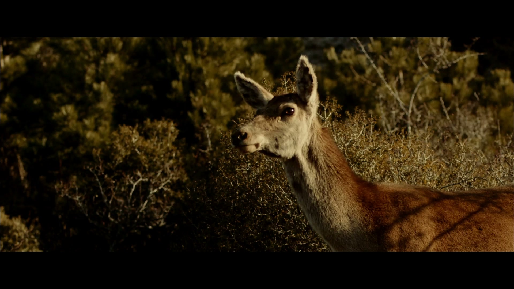

Filmmaker / Editor / Digital Artist
SHOWREEL
NIKOLAS ROUMELIOTIS / SHOWREELEXPLORE THE WORK
Stories take shape
in the edit.
Film, moving image and creative collaborations.
Discover the work
Stories take shape
in the edit.
Film, moving image and creative collaborations.
Discover the work